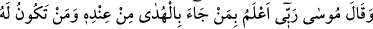
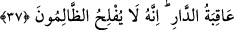
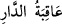
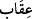
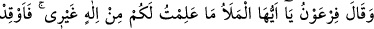
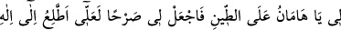
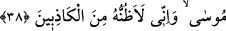

“Biz önceki atalarımızdan böylesi” bir sihri “işitmemiştik, dediler.”
37. Mûsâ şöyle dedi: Rabbim, kendi katından kimin hidâyet (hakka rehberlik)
getirdiğini ve hayırlı âkıbetin kime nasip olacağını en iyi bilendir. Muhakkak ki,
zalimler iflâh olmazlar.
“Mûsâ” (a.s.) kendi nefsini kasdederek “şöyle dedi: Rabbim, kendi katından kimin
hidâyet (hakka rehberlik) getirdiğini ve” bu dünya evinin sonunda “hayırlı âkıbetin,”
cennetin “kime nasip olacağını en iyi bilendir.” Yani, O beni gönderdi ve O
bilmektedir ki ben hak üzereyim, sen ise batıl üzeresin.
“__WORD__, dünya evinin neticesi, sonucu demektir ve bununla kasdedilen cennettir.
Çünkü dünya âhirete bir yol ve ekim yeri (mezraa) olarak yaratılmıştır. Burada
“âkıbet”ten kasdedilen şey sevaptır. “__WORD__ (cezâlandırma)” ise âsîlerin amellerinin
sonucunda ortaya çıkar. Dünya için aslî ve mutlak âkibet, mahmûde (öğülen bir âkibet)
olup mezmûme (yerilen bir âkibet) değildir.
“Muhakkak ki, zalimler iflâh olmazlar.” Küfür ve tekzible kendilerini helâk ederler;
umduklarına nâil olamazlar ve korktuklarından da kurtulamazlar. Korktuklarından biri
de dünyada uğrayacakları azaptır.
Burada müminlerin kurtulacağına ve kâfirlerin helâk olacağına ve her nefsin kendi
kurtuluşu için çalışması gerektiğine işâret vardır. Bu takdirde başkasının helâk olması,
ona zarar vermez.
38. Firavun: Ey ileri gelenler! Sizin için benden başka bir ilâh tanımıyorum. Ey
Hâmân! Haydi benim için çamur üzerine ateş yak (ve tuğla imal et), bana bir kule
yap ki Mûsâ’nın tanrısına çıkayım; ama sanıyorum, o mutlaka yalan
söyleyenlerdendir, dedi.
“Firavun”, sihirbazları toplayıp muâraza ve münâkaşa için öne çıkarken dedi ki: “Ey
ileri gelenler!” Ey seçkinler ve ulular topluluğu! Sizin için benden başka bir ilâh